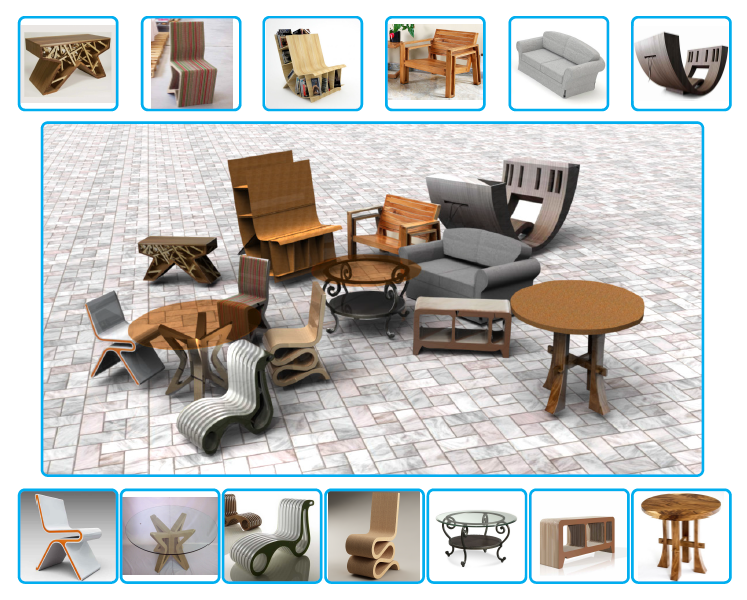
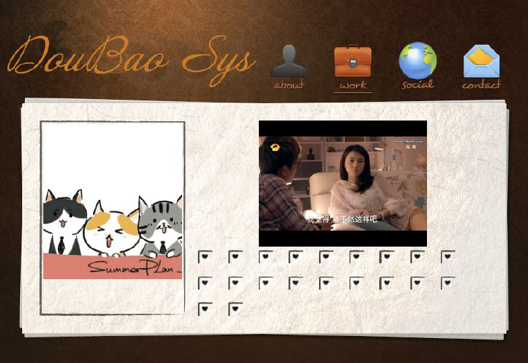

|

|
Interactive Image-Guided Modeling of Extruded Shapes
Proceedings of Pacific Graphics 2014(Best Paper), Computer Graphics Forum, Vol. 33, No. 7, 2014.
Yan-Pei Cao, Tao Ju,
Zhao Fu, Shi-Min Hu
A recent trend in interactive modeling of 3D shapes from a single image is designing minimal
interfaces, and accompanying algorithms, for modeling a specific class of objects. Expanding
upon the range of shapes that existing minimal interfaces can model, we present an interactive
image-guided tool for modeling shapes made up of extruded parts. An extruded part is represented
by extruding a closed planar curve, called base, in the direction orthogonal to the base. To
model each extruded part, the user only needs to sketch the projected base shape in the image.
The main technical contribution is a novel optimization-based approach for recovering the 3D
normal of the base of an extruded object by exploring both geometric regularity of the sketched
curve and image contents. We developed a convenient interface for modeling multi-part shapes and
a method for optimizing the relative placement of the parts. Our tool is validated using
synthetic data and tested on real-world images.
[paper]
[video]
[project]
|
|

|
Plot-Based TV Series Segmentation
Advisor: Ming-Xing Xu
When watching TV series, different people like different plots. It is efficient for
the audiences to find an exciting plot if we mark the change point of different plots for
them before they watch. Youku, one of the famous internet media web has already marked main
change points for most TV series manually, but this costs the workers lots of time. In order
to save time, we developed an algorithm to find the change points automatically. We created
rules for iteratively removing cuts with features extracted from video stream and audio
stream. Our results contain all the change points in Youku.
[report(Chinese Version)]
|